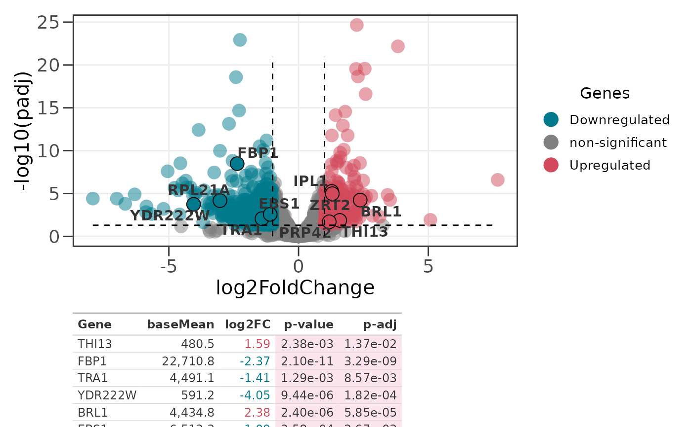
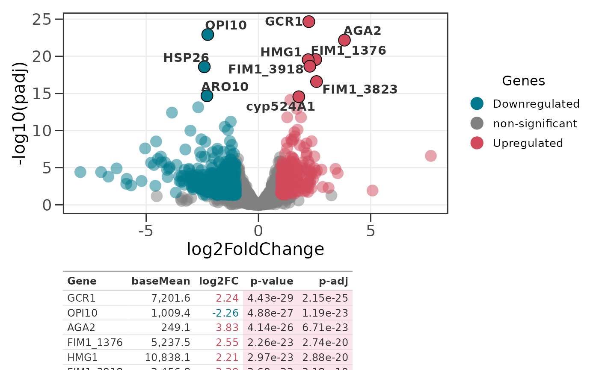
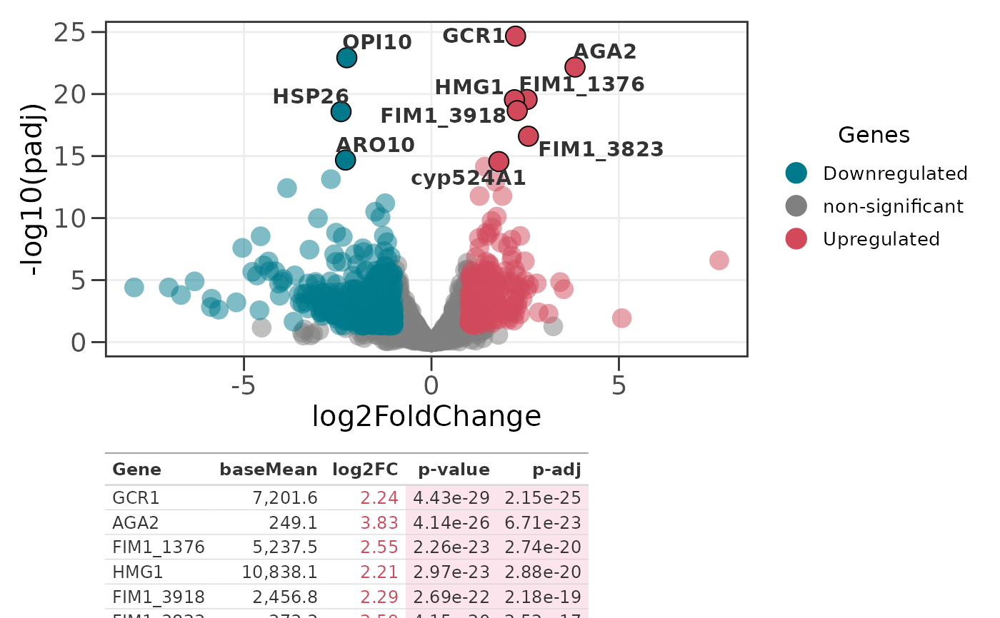

Takes a ggplot object (typically from ggvolc) and a data frame
of gene details and produces a combined layout using patchwork.
The gene table is rendered as a polished gt table with color-coded
significance and formatted numeric columns.
Arguments
- plot_obj
A ggplot object, typically the output of
ggvolc.- data2
A data frame containing gene details. Columns are auto-detected in the same way as
ggvolc(DESeq2, edgeR, or limma conventions). Required columns after mapping:genes,log2FoldChange,pvalue. Optional:baseMean,padj. Whentop_nis supplied you can pass the full DE table here (e.g.all_genes) and the most significant genes are selected automatically.- top_n
Optional integer. When supplied, the
top_nmost significant genes (smallestsig_col, among genes withsig_col < p_value) are selected fromdata2for the table. WhenNULL(default) every row ofdata2is shown, so passing a pre-filtered set such asattention_genesbehaves as before.- sig_col
Column used to rank significance when
top_nis set. Either"padj"(adjusted p-value / FDR, the default) or"pvalue". Falls back to"pvalue"when"padj"is the default but no adjusted-p column is present.- dir
Direction to draw the
top_ngenes from. One of"both"(top N over all significant genes, the default),"up"(top N upregulated),"down"(top N downregulated), or"each"(top N up and top N down, up to2 * top_nrows). Ignored whentop_nisNULL.- p_value
Significance threshold used for color-coding the p-value column, and for filtering eligible genes when
top_nis set. Default is 0.05.- table_height
Relative height of the table panel (plot panel is always 3). Default is 1.
Value
A patchwork object that can be further composed or saved with
ggplot2::ggsave().
Examples
# Load example datasets
data(all_genes)
data(attention_genes)
# Create a volcano plot and combine it with a gt gene table
p <- ggvolc(all_genes, attention_genes, add_seg = TRUE)
genes_table(p, attention_genes)

# Auto-select the 10 most significant genes from the full table
p2 <- ggvolc(all_genes, label_top = 10)
genes_table(p2, all_genes, top_n = 10)

# Top 8 of each direction (up to 16 rows)
genes_table(p2, all_genes, top_n = 8, dir = "each")
